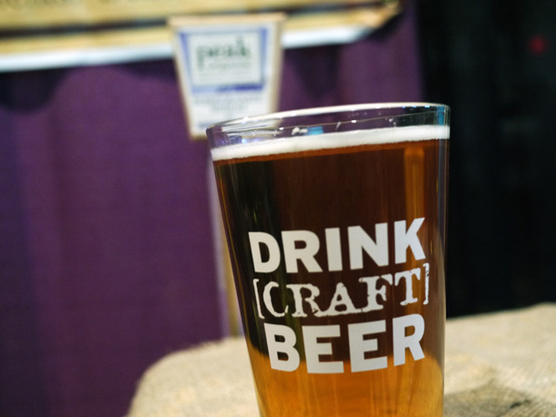

Organizations and breweries in DFW hold events weekly that promote the craft beer industries in DFW, the region, and the nation. Below is a list of craft beer festivals with links to the websites so you can stay informed of events in the area.